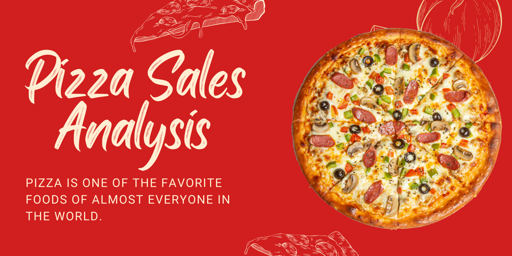

This project builds a predictive machine learning model to identify credit card customers at risk
of
defaulting on their payments. It employs advanced techniques, including SMOTE for handling class
imbalance, and compares multiple algorithms to find the best performer.

Analyzed one year of pizza sales data using SQL to optimize menu items, staffing, and inventory.
Identified key revenue drivers and seasonal trends to improve operational efficiency and
profitability.
This project applies data analytics and machine learning to improve hospital operations.
Using Python (XGBoost), SQL, Power BI, and Excel, I analyzed admission and discharge data to
uncover patient flow trends and predict future demand. The interactive Power BI dashboard
visualizes key metrics like bed occupancy, staff utilization, and seasonal patterns, helping
hospital administrators make data-driven resource decisions.

This project focuses on exploring the relationship between environmental factors and water
quality. I developed an interactive Power BI dashboard that visualizes data from multiple
monitoring stations, revealing trends between rainfall, turbidity, land use, nutrient
levels, and pollution events to support data-driven environmental insights.